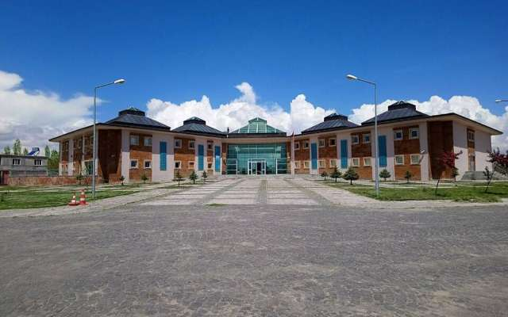

वान झील के चारों ओर: उरार्तु की राजधानी तुश्पा से अकदामार द्वीप और अहलात की सेल्जुक समाधि-शिलाओं तक।
दिन 1

वान किला वान झील के किनारे एक लंबी, खड़ी चट्टान पर उठता है। उरार्तु साम्राज्य की राजधानी तुश्पा का हृदय रहा यह किला ईसा पूर्व 9वीं शताब्दी से उपयोग में था। चट्टान में…

वान संग्रहालय उरार्तु सभ्यता के विश्व के सबसे समृद्ध संग्रहों में से एक रखता है। इसके नए भवन में काँसे की पेटियाँ, ढालें, शिरस्त्राण, घोड़े का साज़, सोने के आभूषण,…

वान के दक्षिण-पूर्व में चावुशतेपे किला ग्युरपीनार मैदान के ऊपर एक लंबी, संकरी चोटी पर बना उरार्तु दुर्ग है। ईसा पूर्व 8वीं शताब्दी के अंत में राजा सर्दुरी द्वितीय…

वान के ग्युरपीनार में होशाप किला होशाप धारा के किनारे एक चट्टानी पहाड़ी का मुकुट है। ज्ञात है कि इसे 17वीं शताब्दी में महमूदी वंश के सारी सुलेमान बे ने बनवाया था; यह…
दिन 2
वान झील के अक्दामार द्वीप पर पवित्र क्रॉस चर्च को 10वीं शताब्दी के आरंभ में वास्पुराकान के राजा गागिक प्रथम ने बनवाया था। इसकी बाहरी उभरी नक्काशियाँ मध्यकालीन…

वान झील के किनारे अहलात सेल्जुक क़ब्रिस्तान को तुर्क-इस्लामी दुनिया के सबसे बड़े और प्रभावशाली क़ब्रिस्तानों में गिना जाता है। इसके हज़ारों समाधि-पत्थरों में से कुछ…

अहलात संग्रहालय वान झील के उत्तर-पश्चिमी तट पर बसे ऐतिहासिक अहलात की समृद्ध विरासत प्रस्तुत करता है। उरार्तु काल से बसा यह क्षेत्र सेल्जुकों और बाद की रियासतों के समय…
आपकी योजना में मदद के लिए दिन-ब-दिन तैयार मार्ग। समय अनुमानित हैं; यात्रा से पहले खुलने का समय और सड़क की स्थिति जाँच लें।